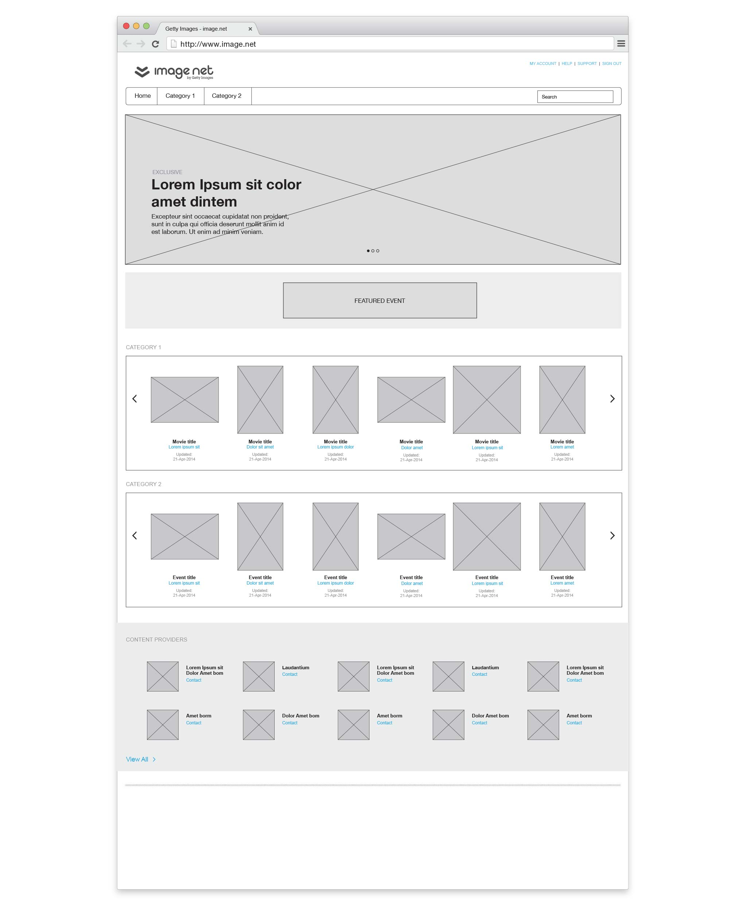

<!DOCTYPE html>
<!--[if lt IE 7]>      <html class="no-js lt-ie9 lt-ie8 lt-ie7"> <![endif]-->
<!--[if IE 7]>         <html class="no-js lt-ie9 lt-ie8"> <![endif]-->
<!--[if IE 8]>         <html class="no-js lt-ie9"> <![endif]-->
<!--[if gt IE 8]><!--> <html class="no-js"> <!--<![endif]-->
    <head>
        <meta charset="utf-8">
        <meta http-equiv="X-UA-Compatible" content="IE=edge">
        <title></title>
        <meta name="description" content="">
        <meta name="viewport" content="width=device-width, initial-scale=1">

        <!-- Stylesheets: Plugins -->
        <link  href="http://cdnjs.cloudflare.com/ajax/libs/fotorama/4.6.2/fotorama.css" rel="stylesheet">
        
        <!-- Stylesheets: General -->
        <link rel="stylesheet" href="css/normalize.css"> 
        <link rel="stylesheet" href="css/grid_full.css">
        <link rel="stylesheet" href="css/grid_content.css">
        <link rel="stylesheet" href="css/main.css">
        
        <!-- Typekit -->
        <script src="http://use.typekit.net/ffu8fit.js"></script>
		<script>try{Typekit.load();}catch(e){}</script>
        
        <!-- Modernizr -->
        <script src="js/vendor/modernizr-2.6.2.min.js"></script>
    </head>
    <body>
        <!--[if lt IE 7]>
            <p class="browsehappy">You are using an <strong>outdated</strong> browser. Please <a href="http://browsehappy.com/">upgrade your browser</a> to improve your experience.</p>
        <![endif]-->
         
    	<header class="grid_full clear">
    		<div>
        		<a href="index.html"><span class="logo"></span></a>
        	</div>
        	<nav>
        		<ul class="clear">
            		<li><a href="index.html#work">Work</a></li>
                	<li><a href="index.html#about">About</a></li>
            	</ul>
        	</nav>
    	</header>
        
        <main class="content-container">
        
        	<section class="grid_full spacer_80">
            	
            </section>
            
            <section class="grid_fixed description spacer_120">
            	<h1 class="">Homepage Redesign</h1>
                <h2 class="spacer_20">Website design | Branding | UX design | Typography</h2>
                <p class="">Image.net is a site owned by Getty Images that provides free publicity photos and videos to media clients.  The homepage design was getting stale and we were tasked with finding ways to improve the site experience. We created and administered an user survey and an usability study to identify areas to improve, and then produced UX designs based on user feedback.</p>
                <hr>
            </section>
            
            <section class="grid_full spacer_80">
            	<div class="sectionTitle">
                	<h4>Stage 1</h4>
                    <h3>Collect</h3>
                </div>
                
            </section>
            
            <section class="grid_fixed spacer_120">
            	<h4 class="">User Survey</h4>
                <p class="spacer_40">Before diving into the design process we wanted to understand what features were most desired by our users. We designed and distributed a survey to find out how users were currently using the site, and how they would prefer to access our content. Analyzing the survey results helped us determine what to feature on the home page, and how to prioritize the content.</p>
                
                
            </section>
            
            <section class="grid_fixed spacer_120">
            	<h4 class="">Usability Study</h4>
                <p class="spacer_40">We followed up on the survey with a series of user interviews to get more detailed information on features that were confusing or frustrating. From these interviews, we found specifically that users were struggling with finding and downloading content quickly.</p>
                
            </section>
            
            <section class="grid_fixed spacer_120">
                <p class="spacer_20">For the usability study we first identified what our main goals from the study were going to be.</p>
                <div class="textblock">
                	<ol>
                    	<li class="quote">Understand our users and their workflow</li>
                        <li class="quote">Oberserve and dive deeper into their key user concerns</li>
                    </ol>
                </div>
            </section>
            
            <section class="grid_fixed spacer_120">
                <p class="spacer_40">Then we developed the set of questions that we asked each user during the study.</p>
                <div class="textblock">
                	<ol>
                    	<li class="quote">In the survey we recently sent you, you mention that you struggle with [x]. Could you walk us through [x] and talk more about your frustrations or concerns?</li>
                        <li class="quote">How could we make [x] work better for you?</li>
                        <li class="quote">Are there other sites that you visit where [x] works really well? Can you show us what that looks like?</li>
                    </ol>
                </div>
            </section>
            
            <section class="grid_fixed spacer_80">
            	<h4 class="">Market Comparison</h4>
                <p class="spacer_40">After gathering information from our users, we compared the image.net homepage with competitors in the industry. We used this research to identify strengths and weaknesses of the current design and to help us find ways to improve the site.</p>
                <div class="content_col-1-2">
                	
                </div>
                <div class="content_col-1-2">
                	
                </div>
            </section>
            
            <section class="grid_full spacer_80">
            	<div class="sectionTitle">
                	<h4>Stage 2</h4>
                    <h3>Iterate</h3>
                </div>
                
            </section>
            
            <section class="grid_fixed spacer_20">
            	<h4 class="">Brainstorm Session</h4>
                <p class="spacer_40">We brainstormed design concepts using a technique that combines creating pre-formed modules and sketch work with a whiteboard and magnets. It’s like putting a puzzle together and you can quickly create ideas. This process allows non-design team members to visualize ideas quickly. In the early phase I always love including the entire team as everyone has a perspective to contribute.</p>
                <div class="content_col-1-2">
                	
                </div>
                <div class="content_col-1-2">
                	
                </div>
            </section>
            
			<section class="grid_fixed spacer_120">
                <div class="content_col-1-2">
                	
                </div>
                <div class="content_col-1-2">
                	
                </div>
            </section>    
                    
            <section class="grid_fixed spacer_120">
            	<h4 class="">Hi-fi Wireframes</h4>
                <p class="spacer_40">We finished the project by creating hi-fidelity wireframes that conveyed the new information architecture and interactivity.</p>
                <div class="fotorama" data-autoplay="3000" data-transition="crossfade" data-arrows="false" data-click="true" data-swipe=" false" data-loop="true">
                	
                    
                    
                </div>
            </section>
              
		</main>

		<footer class="grid_full">
        	<div class="">
        		<a href="index.html"><span class="logo-footer"></span></a>
                <p class="copyright"><small>Hand made by Marta Sivertsen</small></p>
        	</div>
        </footer>
        
        
		<!-- Javascript -->
		<script src="//ajax.googleapis.com/ajax/libs/jquery/1.10.2/jquery.min.js"></script>
        <script>window.jQuery || document.write('<script src="js/vendor/jquery-1.10.2.min.js"><\/script>')</script>
        
		<!--<script src="../js/plugins.js"></script>-->
        <!-- <script type="text/javascript" src="test/js/jquery.scrollmagic.js"></script> <!-- x -->
        <script src="http://cdnjs.cloudflare.com/ajax/libs/fotorama/4.6.2/fotorama.js"></script>  <!-- Image gallery/slideshow -->

        <script src="js/main.js"></script>

        <!-- Google Analytics: change UA-XXXXX-X to be your site's ID. -->
        
     
    </body>
</html>
